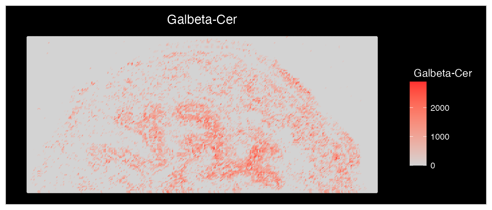
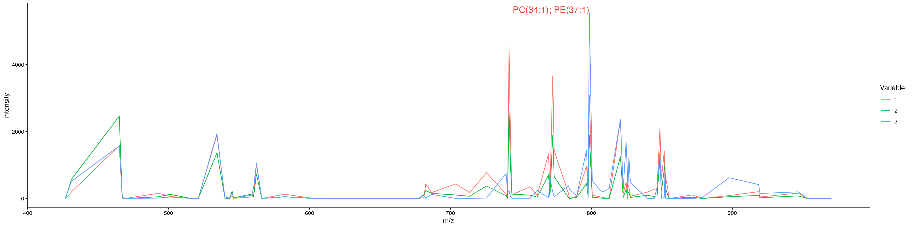
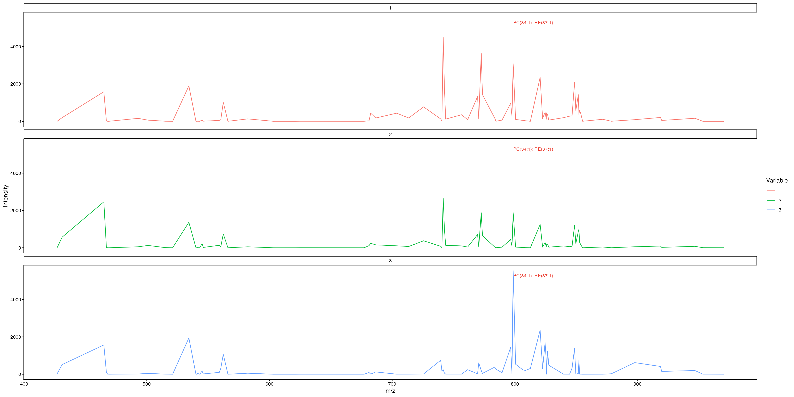

SpaMTP: Additional Analysis Features
Source:vignettes/SpaMTP_Additional_Features.Rmd
SpaMTP_Additional_Features.RmdThis vignette will highlights some additional features of SpaMTP that can be useful for analysing and visualising your SM data. This vignette will again use the public mouse urinary bladder dataset analysed extensively here.
Author: Andrew Causer
## Install SpaMTP if not previously installed
if (!require("SpaMTP"))
devtools::install_github("GenomicsMachineLearning/SpaMTP")
#General Libraries
library(SpaMTP)
library(Cardinal)
library(Seurat)
library(dplyr)
#For plotting + DE plots
library(ggplot2)
library(EnhancedVolcano)Load Processed Data
Here, we will be using already processed, clustered (via spatially-aware Shrunken Centroid) and annotated data. For more information about how the data was processed, please visit here.
bladder_annotated <- readRDS(url("https://zenodo.org/records/17246684/files/bladder_annotated.RDS?download=1"))
bladder_annotated <- UpdateSeuratObject(bladder_annotated) # Only Required if SeuratObjects => 5.0.2Querying an SpaMTP Dataset
SpaMTP stores the relative m/z value annotations in the objects feature metadata slot. We can see this below:
head(bladder_annotated@assays$Spatial@meta.data) | raw_mz | mz_names | observed_mz | all_IsomerNames | all_Isomers | all_Adducts | all_Formulas | all_Errors | Lipid.Maps.Category | Lipid.Maps.Main.Class | Species.Name | Species.Name.Simple | |
|---|---|---|---|---|---|---|---|---|---|---|---|---|
| 16 | 426.9289 | mz-426.928863525391 | 426.928863525391 | Laurenenyne A; Laurenenyne B; Katsuurenyne A | LMPK02000053; LMPK02000054; LMPK02000055 | M+K | C15H18O2Br2 | 3.8565 | NA | NA | NA | NA |
| 17 | 431.0381 | mz-431.038116455078 | 431.038116455078 | 5,7,3’,4’,5’-Pentahydroxy-3,6,8-trimethoxyflavone | LMPK12113357 | M+K | C18H16O10 | 1.4116 | NA | NA | NA | NA |
| 37 | 465.0228 | mz-465.022796630859 | 465.022796630859 | Aspergillusether D | LMPK13090053 | M+K | C20H20O6Cl2 | 8.725 | NA | NA | NA | NA |
| 39 | 467.1028 | mz-467.102752685547 | 467.102752685547 | Emeguisin B | LMPK13080006 | M+K | C24H25O5Cl | 1.1597 | NA | NA | NA | NA |
| 40 | 468.1027 | mz-468.102722167969 | 468.102722167969 | 14-carboxy-15,16,17,18,19,20-hexanor-N-acetyl-leukotriene E3 | LMFA03020084 | M+K | C19H27NO8S | 13.1953 | NA | NA | NA | NA |
| 41 | 469.1054 | mz-469.105377197266 | 469.105377197266 | 6-iodo-5-hydroxy-eicosa-8Z,11Z,14Z-trienoic acid gamma lactone | LMFA03000015 | M+K | C20H31O2I | 11.3775 | NA | NA | NA | NA |
However, there is are some useful functions that lets the user search through their SpaMTP dataset to find either exact m/z values or metabolite names that they are interested in. Lets see how each works:
The first is FindNearestMZ(), this function lets users find the m/z value in their dataset that is closest to the value being queried.
FindNearestMZ(bladder_annotated, 741.5)## [1] "mz-741.530578613281"This is useful if the metabolite of interest has a known m/z mass, or if the user wants to use Seurat’s feature plotting functions.
The second is SearchAnnotations(), this function lets users query a metabolite to find if it is present within their dataset.
SearchAnnotations(bladder_annotated, metabolite = "Isorhamnetin 3-(6''-malonylglucoside)", search.exact = TRUE)| raw_mz | mz_names | observed_mz | all_IsomerNames | all_Isomers | all_Adducts | all_Formulas | all_Errors | Lipid.Maps.Category | Lipid.Maps.Main.Class | Species.Name | Species.Name.Simple | |
|---|---|---|---|---|---|---|---|---|---|---|---|---|
| 130 | 603.0773 | mz-603.077331542969 | 603.077331542969 | Isorhamnetin 3-(6’‘-malonylglucoside); Larycitrin 3-(4’’-malonylrhamnoside) | LMPK12110589; LMPK12112481 | M+K | C25H24O15 | 4.3917 | NA | NA | NA | NA |
The search.exact parameter specifies whether there needs
to be an exact match to the metabolite name. If set to
FALSE, users can find all metabolites with similar names.
For example, we want to see all the different types of
(3'-sulfo)Galbeta-Cer lipids in our dataset.
SearchAnnotations(bladder_annotated, metabolite = "(3'-sulfo)Galbeta-Cer", search.exact = FALSE)| raw_mz | mz_names | observed_mz | all_IsomerNames | all_Isomers | all_Adducts | all_Formulas | all_Errors | Lipid.Maps.Category | Lipid.Maps.Main.Class | Species.Name | Species.Name.Simple | |
|---|---|---|---|---|---|---|---|---|---|---|---|---|
| 287 | 918.5832 | mz-918.583190917969 | 918.583190917969 | (3’-sulfo)Galbeta-Cer(d18:1/22:0(2OH)) | LMSP06020011 | M+K | C46H89NO12S | 10.3224 | NA | NA | NA | NA |
| 295 | 946.6147 | mz-946.61474609375 | 946.61474609375 | (3’-sulfo)Galbeta-Cer(d18:1/24:0(2OH)) | LMSP06020014 | M+K | C48H93NO12S | 10.2863 | NA | NA | NA | NA |
This function also lets users select the feature metadata column they want to query. For example, if RefineLipis() has been run, users can search for all lipids of the Class “GlcCer”.
SearchAnnotations(bladder_annotated, metabolite = "GlcCer", search.exact = FALSE, column.name = "Lipid.Maps.Main.Class")| raw_mz | mz_names | observed_mz | all_IsomerNames | all_Isomers | all_Adducts | all_Formulas | all_Errors | Lipid.Maps.Category | Lipid.Maps.Main.Class | Species.Name | Species.Name.Simple | |
|---|---|---|---|---|---|---|---|---|---|---|---|---|
| 168 | 682.4571 | mz-682.457092285156 | 682.457092285156 | GlcCer(d18:1/12:0); GlcCer(d14:1/16:0) | LMSP0501AA01; LMSP0501AA39 | M+K | C36H69NO8 | 12.2859 | SP | GlcCer | GlcCer 30:1;O2 | GlcCer(30:1) |
| 236 | 808.5806 | mz-808.580627441406 | 808.580627441406 | GlcCer(d18:2(4E,8Z)/20:0(2OH[R])); GlcCer(d18:2(4E,8E)/20:0(2OH[R])); GlcCer(d14:1(4E)/24:1(15Z)(2OH)); GlcCer(d14:2(4E,6E)/24:0(2OH)); GlcCer(d16:2(4E,6E)/22:0(2OH)) | LMSP05010052; LMSP05010065; LMSP0501AA69; LMSP0501AA73; LMSP0501AA80 | M+K | C44H83NO9 | 13.2152 | SP | GlcCer | GlcCer 38:2;O3 | GlcCer(38:2) |
Subsetting a SpaMTP Dataset by Metabolites
In some cases, we may want to reduce the number of features present in our dataset. Often there are thousands or millions of metabolites in one dataset, removing unwanted metabolites can often reduce the computational load. Below, we demonstrate how to subset our bladder dataset to only include Glycerophospholipids.
GPs <- SearchAnnotations(bladder_annotated, metabolite = "GP", search.exact = FALSE, column.name = "Lipid.Maps.Category")
bladder_GPs <- SubsetMZFeatures(bladder_annotated, features = GPs$mz_names)
bladder_annotated## An object of class Seurat
## 79 features across 34840 samples within 1 assay
## Active assay: Spatial (79 features, 0 variable features)
## 1 layer present: counts
## 1 spatial field of view present: fov
bladder_GPs## An object of class Seurat
## 33 features across 34840 samples within 1 assay
## Active assay: Spatial (33 features, 0 variable features)
## 1 layer present: counts
## 1 spatial field of view present: fovWe now only have 33 features, compared to the 79 in the original dataset.
Visualising SM data using SpaMTP
An important part of any analysis pipeline is to generate informative and clear visualisations of the results. SpaMTP has a range of visualisation functions and features, which we will step through below.
Plotting a m/z Value
Plotting in SpaMTP builds on ggplot2 allowing for easy organisation and plot manipulation. Below, we will plot the expression of the m/z 741.530578613281 using Seurat’s plotting function ImageFeaturePlot(). Below we use ggplot helper functions to orientate the image correctly.
ImageFeaturePlot(bladder_annotated, features = "mz-741.530578613281", size = 2) & coord_flip() & scale_x_reverse()
Comparatively, the SpaMTP function ImageMZPlot() provides more SM-based functionality, including:
- Plotting the closest m/z value to the numeric value provided.
- Plotting the combined expression of ± the mz value in ppm
- Plotting the spots as either circles (ST) or pixels (SM)
ImageMZPlot(bladder_annotated, mz = 741.53057, plusminus = 1, size = 1, plot.pixel = TRUE) & coord_flip() & scale_x_reverse()Plotting a Metabolite Name
In addition, SpaMTP also has the function ImageMZAnnotationPlot(), which allows users to plot the spatial expression of named metabolites. In addition to the features above, this function also lets users:
- Plot from a specific column in the feature metadata containing the m/z metabolite annotations
- Combine the expression of all metabolites that match the specified
name (as described above using plot.exact =
FALSE).
We will use the “Galbeta-Cer” metabolites as an example:
mb <- (SearchAnnotations(bladder_annotated, metabolite = "Galbeta-Cer", search.exact = FALSE))$all_IsomerNames
mb## [1] "(3'-sulfo)Galbeta-Cer(d18:1/22:0(2OH))"
## [2] "(3'-sulfo)Galbeta-Cer(d18:1/24:0(2OH))"Lets plot them individually:
ImageMZAnnotationPlot(bladder_annotated, metabolites = c("(3'-sulfo)Galbeta-Cer(d18:1/22:0(2OH))", "(3'-sulfo)Galbeta-Cer(d18:1/24:0(2OH))"), slot = "counts", plot.exact = FALSE, size = 1.5) & coord_flip() & scale_x_reverse()Lets plot them combined:
ImageMZAnnotationPlot(bladder_annotated, metabolites = "Galbeta-Cer", slot = "counts", plot.exact = FALSE, size = 1.5) & coord_flip() &
scale_x_reverse()
There are equivalent functions for SpaMTP Seurat objects that contain images these being SpatialMZPlot() and SpatialMZAnnotationPlot(). Examples of these are shown below.
Plotting Mass Intensity Spectra Plots
Often we are interested in different patterns of metabolite expression between groups such as clusters. Mass intensity plots can be useful at displaying the overall patters of each tissue region. SpaMTP provides functionality to generate these plots and also label peaks with selected metabolites.
ROI <- subset(bladder_annotated, subset = ssc %in% c("2", "5", "6"))
MassIntensityPlot(ROI, group.by = "ssc", label.annotations = TRUE, metabolite.labels = c("PC(34:1)"), annotation.column = "Species.Name.Simple",labelAdj = 0,
labelOffset = 1)
Based on this plot, we can see that our metabolite “PC(34:1)” has been annotated on the plot. The plot looks quite crowded though. We can either change the mass range to only show the specific region on the spectrum, or we could generate individual plots for each cluster. We will show both approaches below:
Change the mass range:
MassIntensityPlot(ROI, group.by = "ssc", mass.range = c(750, 850), label.annotations = TRUE, metabolite.labels = c("PC(34:1)"), annotation.column = "Species.Name.Simple",labelAdj = 0, labelOffset = 1)
Generate individual plots per cluster:
MassIntensityPlot(ROI, split.by = "ssc", label.annotations = TRUE, metabolite.labels = c("PC(34:1)"), annotation.column = "Species.Name.Simple",labelAdj = 2, labelOffset = 0,labelCex = 3)
Now we can clearly see that this metabolite is highly expressed by cluster 6!
There are various additional visualisation techniques such as 3D Density Kernel plotting and various DE and pathway analysis plotting functions. These can all be seen in either the SM data analysis or Multi-Omic data analysis vignettes.
Binning Metabolites
Expression of specific metabolites on their own can sometime be
difficult to detect, however when combining the expression of similar
metabolites, these patterns can become more observable.
SpaMTP has the function
BinMetabolites(), which lets users specify the metabolites they
want to combine the expression of. These values are then stored in the
@meta.data slot of the SpaMTP
Seurat object and can be plotted or used for further analysis.
Below, we will demonstrate how to bin the expression of all
Glycerophospholipids.
mzs <- SearchAnnotations(bladder_annotated, metabolite = "GP", search.exact = FALSE, column.name = "Lipid.Maps.Category")$mz_names
bladder_annotated <- BinMetabolites(bladder_annotated, mzs = mzs, assay = "Spatial", slot = "counts", bin_name = "Binned_GPs")
head(bladder_annotated@meta.data)| orig.ident | nCount_Spatial | nFeature_Spatial | sample | x_coord | y_coord | ssc | Binned_GPs | |
|---|---|---|---|---|---|---|---|---|
| 1_1 | SeuratProject | 54142.66 | 32 | mouse-bladder-peaks | 1 | 1 | 4 | 0.0000 |
| 2_1 | SeuratProject | 33354.74 | 12 | mouse-bladder-peaks | 2 | 1 | 4 | 0.0000 |
| 3_1 | SeuratProject | 62429.26 | 59 | mouse-bladder-peaks | 3 | 1 | 4 | 415.6588 |
| 4_1 | SeuratProject | 75365.22 | 89 | mouse-bladder-peaks | 4 | 1 | 4 | 0.0000 |
| 5_1 | SeuratProject | 75335.54 | 80 | mouse-bladder-peaks | 5 | 1 | 4 | 0.0000 |
| 6_1 | SeuratProject | 63557.09 | 61 | mouse-bladder-peaks | 6 | 1 | 4 | 425.8180 |
We can see the expression values have been stored in the
@meta.data column “Binnde_GPs”. Now lets plot the
results:
ImageFeaturePlot(bladder_annotated, features = "Binned_GPs", size = 2) & coord_flip() & scale_x_reverse() & scale_fill_gradientn(colors = viridis::viridis(100))We can see that there is high expression of GP’s in the urothelium and adventitia layers of the bladder. This feature is especially useful to combine metabolites that are all up expressed in a specific condition/cluster (following differential expression analysis).
Adding H&E Image to Spatial Metabolomic Data
One useful feature of SpaMPT is the ability to add a H&E or tissue image to the SpaMTP object. This can allow the user to visualise key structural metabolic patterns that match to the tissue morphology. Below, we will demonstrate how to manually align your image with your SM dataset.
bladder_HE <- AddSMImage("./mouse_urinary_bladder_HE.tif", bladder_annotated, msi.pixel.multiplier = 2)This function will activate an interactive window where you can change the MSI coordinates to align to the image provided. This includes rotating, adjusting x and y coordinates, flipping around the x or y axis, and also scaling. The user can also select any column in the object’s metadata to plot. This can help assist the alignment process, in particular by using clustering results.
Here is an example of what the alignment GUI looks like, and also the perimeters we used to align the H&E image:

After clicking the return aligned data button a
SpaMTP Seurat object with the H&E
image added to the @image$slice1 slot will be returned.
Here “fov” is the original SM plotting coordinates and “slice1” has the
adjusted coordinates to match the H&E image.
bladder_HE@images## $fov
## Spatial coordinates for 34840 cells
## Default segmentation boundary: centroids
## Associated assay: Spatial
## Key: Spatial_
##
## $slice1
## Spatial coordinates for 34840 cells
## Default segmentation boundary: centroids
## Associated assay: Spatial
## Key: slice_Lets now visualise this:
(ImageDimPlot(bladder_HE, group.by = "ssc", fov = "fov", size = 1) & scale_y_reverse() )/
(SpatialDimPlot(bladder_HE, group.by = "ssc", images = "slice1", pt.size.factor = 3) &theme_void())This also means that we can now visualise our data using the Plot3D() function with a H&E image:
### Identified the m/z values that are to be plot
mzs <- unlist(lapply(c(798.5411, 741.5306), function(x) FindNearestMZ(data = bladder_annotated, target_mz = x)))
ROI_HE <- subset(bladder_HE, subset = ssc %in% c("2", "5", "6"))
Plot3DFeature(ROI_HE, features = mzs, show.image = "slice1", assays = "Spatial", between.layer.height = 300, names = c("PC(34:1)","SM(34:1)"), plot.height = 400, plot.width = 700, downscale.image = 2)This function is designed for plotting two features simultaneously. If we only want to visualise one of the features, we can use a work around to only show a single trace, where trace 1 = feature1, trace 2 = feature2 and trace 3 = image. Here, we just provide one feature to plot. To stop this one feature being replicated, we can add an additional line of code shown below:
p <- Plot3DFeature(ROI_HE, features = mzs[2], show.image = "slice1", assays = "Spatial", between.layer.height = 300, names = c("SM(34:1)", "SM(34:1)"), plot.height = 400, plot.width = 700, downscale.image = 2)
plotly::style(p, visible = FALSE, traces = 1)3D Ploting of features and metadata
Although the Plot3DFeatures function is mainly used for plotting features from different modalities (i.e. genes and metabolites). It can also be used to plot metadata with feature or metadata between modalities. Lets visualise this below:
# Plot3DFeatures can either take in a colour palette (i.e. "Reds", "Blues", etc.) or a list of RGB values
# In this case we want our feature to be plotted using "Reds" and our clustering results to be coloured in categorical colours
col.palette <- list(
"Reds", # Use built-in Plotly colorscale
list( # Define custom colorscale manually
list(0, "rgb(0,0,255)"), # Blue at 0
list(0.5, "rgb(0,255,0)"), # Green at 0.5
list(1, "rgb(255,0,0)") # Red at 1
)
)
Plot3DFeature(ROI_HE, features = c(mzs[2], "ssc"), show.image = "slice1", assays = "Spatial", between.layer.height = 300, names = c("Metabolite", "Clusters"), plot.height = 400, plot.width = 700, downscale.image = 2, col.palette = col.palette)If we want to specify the exact colours for our clusters we can use the code below to convert colours/hex values to RGB:
# We will use the same colour palette as used in the "Mouse Urinary Bladder" tutorial
# Make sure that you only include values that are present in your plot
hex_list = list("2" = "#C2B03B",
"5" = "#0074B0",
"6" = "#DE4D6C")
# Convert the names to numeric values
values <- as.numeric(names(hex_list))
# Normalize values between 0 and 1
normalized_values <- (values - min(values)) / (max(values) - min(values))
# Convert colors to RGB (supports both hex and named colors)
custom_colorscale <- lapply(seq_along(values), function(i) {
rgb_values <- col2rgb(hex_list[[as.character(values[i])]]) # Convert to RGB
list(normalized_values[i], paste0("rgb(", paste(rgb_values, collapse=","), ")"))
})
Plot3DFeature(ROI_HE, features = c(mzs[2], "ssc"), show.image = "slice1", assays = "Spatial", between.layer.height = 300, names = c("Metabolite", "Clusters"), plot.height = 400, plot.width = 700, downscale.image = 2, col.palette = list("Reds", custom_colorscale))Selecting Data Bin Size
One important element in analysing spatial metabolic data is choosing a bin size to reduce the dimensionality of the dataset. SpaMTP provides an interactive plot that lets you change the size of the bin and see which metabolites are included within that bin for a specific peak, and how that changes the expression spatially across the tissue. We can observe this below:
InteractiveSpatialPlot(ROI_HE)Based on this plot, users can adjust the bin size of their data (by
running BinSpaMTP) or can adjust the plusminus
attribute when using ImageMZPlot.
Data Export
Exporting data can often be difficult when dealing with large datasets of different data object types such as R’s Seurat compared to Python’s scanpy. SpaMTP can easily export the data object into matrix.mtx, barcodes.csv and features.csv files, which can be easily read into all major spatial analysis packages. In addition, cell/pixel and feature metadata is also exported as .csv files. Below we demonstrate how to export the files:
SaveSpaMTPData(bladder_HE, outdir = "../Documents/SpaMTP_Output/", assay = "Spatial", slot = "counts", annotations = TRUE)Lets visualise the output files directory structure:
fs::dir_tree("../Documents/SpaMTP_Output/")## ../Documents/SpaMTP_Output/
##
## ├── barcode_metadata.csv
## ├── feature_metadata.csv
## ├── filtered_feature_bc_matrix
## │ ├── barcodes.tsv
## │ ├── genes.tsv
## │ └── matrix.mtx
## └── spatial
## ├── scalefactors_json.json
## ├── tissue_lowres_image.png
## └── tissue_positions_list.csvThis data can therefor be loaded into other applications such as AnnData in python:
Session Info
## R version 4.4.1 (2024-06-14)
## Platform: aarch64-apple-darwin20
## Running under: macOS 15.5
##
## Matrix products: default
## BLAS: /Library/Frameworks/R.framework/Versions/4.4-arm64/Resources/lib/libRblas.0.dylib
## LAPACK: /Library/Frameworks/R.framework/Versions/4.4-arm64/Resources/lib/libRlapack.dylib; LAPACK version 3.12.0
##
## locale:
## [1] en_US.UTF-8/en_US.UTF-8/en_US.UTF-8/C/en_US.UTF-8/en_US.UTF-8
##
## time zone: Europe/Dublin
## tzcode source: internal
##
## attached base packages:
## [1] stats4 stats graphics grDevices utils datasets methods
## [8] base
##
## other attached packages:
## [1] EnhancedVolcano_1.24.0 ggrepel_0.9.6 ggplot2_4.0.0
## [4] dplyr_1.1.4 Seurat_5.3.0 SeuratObject_5.2.0
## [7] sp_2.2-0 Cardinal_3.8.3 S4Vectors_0.44.0
## [10] ProtGenerics_1.38.0 BiocGenerics_0.52.0 BiocParallel_1.40.2
## [13] SpaMTP_1.1.0
##
## loaded via a namespace (and not attached):
## [1] RColorBrewer_1.1-3 rstudioapi_0.17.1 jsonlite_2.0.0
## [4] magrittr_2.0.4 spatstat.utils_3.2-0 farver_2.1.2
## [7] rmarkdown_2.29 fs_1.6.6 ragg_1.5.0
## [10] vctrs_0.6.5 ROCR_1.0-11 spatstat.explore_3.5-3
## [13] RCurl_1.98-1.17 htmltools_0.5.8.1 sass_0.4.10
## [16] sctransform_0.4.2 parallelly_1.45.1 KernSmooth_2.23-26
## [19] bslib_0.9.0 htmlwidgets_1.6.4 desc_1.4.3
## [22] ica_1.0-3 plyr_1.8.9 plotly_4.11.0
## [25] zoo_1.8-14 cachem_1.1.0 igraph_2.1.4
## [28] mime_0.13 lifecycle_1.0.4 pkgconfig_2.0.3
## [31] Matrix_1.7-4 R6_2.6.1 fastmap_1.2.0
## [34] fitdistrplus_1.2-4 future_1.67.0 shiny_1.11.1
## [37] digest_0.6.37 patchwork_1.3.2 tensor_1.5.1
## [40] RSpectra_0.16-2 irlba_2.3.5.1 textshaping_1.0.3
## [43] labeling_0.4.3 progressr_0.16.0 spatstat.sparse_3.1-0
## [46] httr_1.4.7 polyclip_1.10-7 abind_1.4-8
## [49] compiler_4.4.1 proxy_0.4-27 withr_3.0.2
## [52] S7_0.2.0 tiff_0.1-12 viridis_0.6.5
## [55] DBI_1.2.3 fastDummies_1.7.5 MASS_7.3-65
## [58] classInt_0.4-11 units_0.8-7 tools_4.4.1
## [61] lmtest_0.9-40 httpuv_1.6.16 future.apply_1.20.0
## [64] goftest_1.2-3 glue_1.8.0 nlme_3.1-168
## [67] EBImage_4.48.0 promises_1.3.3 sf_1.0-21
## [70] grid_4.4.1 Rtsne_0.17 cluster_2.1.8.1
## [73] reshape2_1.4.4 generics_0.1.4 gtable_0.3.6
## [76] spatstat.data_3.1-8 class_7.3-23 tidyr_1.3.1
## [79] data.table_1.17.8 spatstat.geom_3.6-0 RcppAnnoy_0.0.22
## [82] RANN_2.6.2 pillar_1.11.1 stringr_1.5.2
## [85] spam_2.11-1 RcppHNSW_0.6.0 limma_3.62.2
## [88] later_1.4.4 splines_4.4.1 lattice_0.22-7
## [91] survival_3.8-3 deldir_2.0-4 tidyselect_1.2.1
## [94] CardinalIO_1.4.0 locfit_1.5-9.12 miniUI_0.1.2
## [97] pbapply_1.7-4 knitr_1.50 gridExtra_2.3
## [100] matter_2.8.0 scattermore_1.2 xfun_0.53
## [103] Biobase_2.66.0 statmod_1.5.0 matrixStats_1.5.0
## [106] fftwtools_0.9-11 stringi_1.8.7 lazyeval_0.2.2
## [109] yaml_2.3.10 evaluate_1.0.5 codetools_0.2-20
## [112] tibble_3.3.0 cli_3.6.5 ontologyIndex_2.12
## [115] uwot_0.2.3 xtable_1.8-4 reticulate_1.43.0
## [118] systemfonts_1.2.3 jquerylib_0.1.4 Rcpp_1.1.0
## [121] globals_0.18.0 spatstat.random_3.4-2 zeallot_0.2.0
## [124] png_0.1-8 spatstat.univar_3.1-4 parallel_4.4.1
## [127] pkgdown_2.1.3 dotCall64_1.2 jpeg_0.1-11
## [130] bitops_1.0-9 listenv_0.9.1 viridisLite_0.4.2
## [133] e1071_1.7-16 scales_1.4.0 ggridges_0.5.7
## [136] purrr_1.1.0 rlang_1.1.6 cowplot_1.2.0
## [139] shinyjs_2.1.0